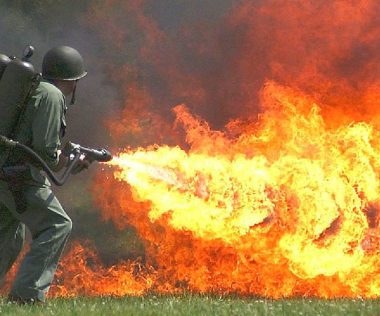

Creating Napalm
By Irene Adler
The first recorded use of napalm was during the Second World War when american Air Force used Incendiary Bombs on berlin. You will most likely be using it to set something on fire for a long time.
Mix the glue with the food coloring until the color is even throughout.
Pour the liquid starch into the colored glue mixture.
Stir and let it sit for five minutes. Pull the putty out of the mixing bowl and set it on a paper towel. Knead the putty in your hands for five to ten minutes. And voila, some fantastic putty.